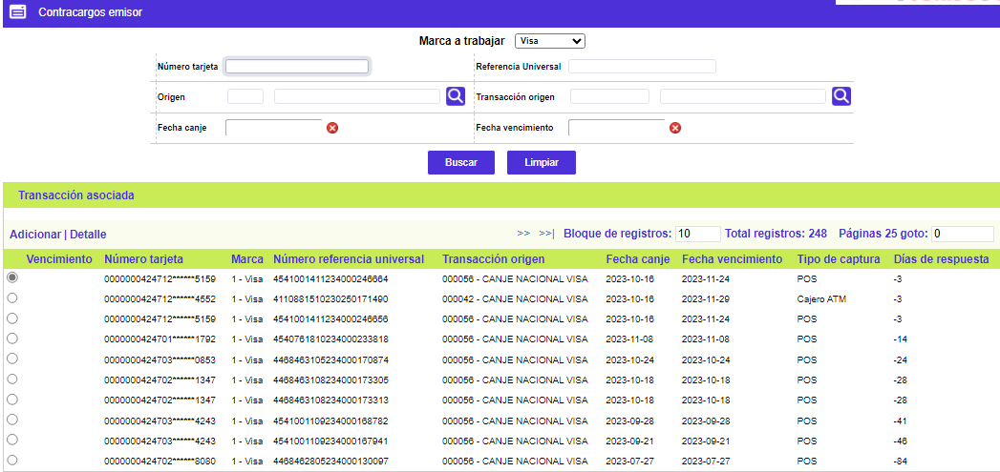
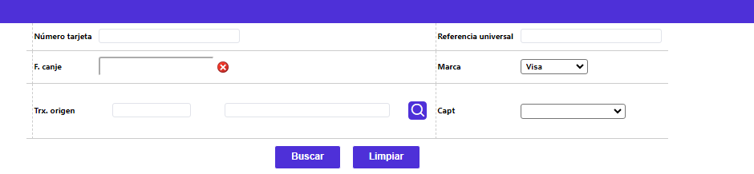
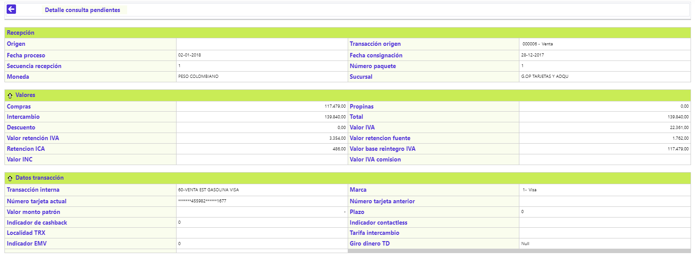
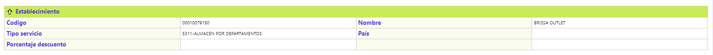
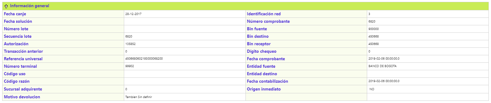
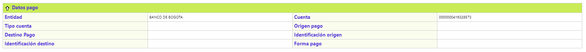
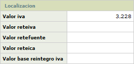

Contracargos
Una entidad financiera usualmente desempeña, respecto de cada transacción, uno de dos roles posibles: Emisor o Adquirente; el sistema a partir del canje recibido o del movimiento pendiente, registra de manera automática en esta opción, las transacciones en disputa. Además es posible ingresar manualmente transacciones originales con todos sus datos, así no existan en el aplicativo, o asociar transacciones ya registradas en el sistema a partir de la referencia universal respectiva, en cuyo caso se cargarán los datos de la transacción original correspondiente en el aplicativo y después de registrar y salvar dicha información, es posible generar las transacciones de contracargo al canje enviado, las que se parametrizan en los Orígenes de transacciones; esto habilita que una vez iniciado el respectivo registro de transacciones se despliegue una lista de transacciones permitidas para cada una de ellas desde el rol emisor o adquirente según sea el caso. Dependiendo de la solución dada al contracargo, el sistema de acuerdo con la parametrización, lo envía a Movimiento día (aplicando o reversando al cliente) y/o a intercambio a través del canje enviado, en el proceso de cierre.
Esta pantalla se divide en dos partes donde la primera corresponde a las transacciones originales de la cual se desprenderán los respectivos contracargos y la segunda parte tiene que ver con las transacciones asociadas en donde se registran los respectivo cargos, reversiones o contracargos.
Con el ánimo de facilitar esta labor se dispone de la pantalla Solución masiva contracargos contenida en éste mismo módulo.
Emisor Este es uno de los dos roles que puede desempeñar la entidad financiera respecto de la transacción en disputa; se identifica con ese nombre a quien emite el plástico a través del que se realizó la transacción, es decir, que el Bin de la tarjeta correspondiente sea de su propiedad.
Un ejemplo de la parametrización desde el rol emisor, puede ser:
Con una transacción ‘000006’ Original de compra, se podría resolver (Trae lista de valores):
‘000016’ – Devolución de compra
‘000052’ – Solicitud de original
‘000054’ – Solicitud de copia
‘000510’ – Reversión de compra Intercambio
Hay que tener en cuenta que cuando se ingrese un contracargo manualmente en el tab de Emisor, el Bin receptor no debe estar creado en los bines propios del banco.
Adquirente Constituye el otro posible rol, o complemento, que permite la interacción tendiente a resolver o pasar a otra instancia o mecanismo, la transacción en disputa u objeto de intercambio con alguna de las redes; el nombre del rol corresponde a la acción de recibir o aceptar la consignación de un establecimiento vinculado a la entidad mediante una cuenta de depósitos o el depósito electrónico dentro del que ingresó la transacción en discordia, depósitos de tarjetas pertenecientes a otras entidades diferentes, es decir, que el Bin de la(s) tarjeta(s) correspondiente(s) no es (son) de su propiedad.
Un ejemplo de la parametrización desde el rol Adquirente, puede ser:
Una transacción ‘000006’ Original de compra, se podría resolver (Trae lista de valores):
‘000026’ – Reversión de compra
‘000036’ – Representación de compra
‘000056’ – Confirmación de envío.
Hay que tener en cuenta que cuando se ingrese un contracargo manualmente en el tab de Adquirente, el Bin receptor debe estar creado en los bines propios del banco.
El Sistema provee un mecanismo que genera devoluciones automáticas a las otras entidades cuando se agota el plazo convenido para dar respuesta, de acuerdo con los Parámetros de la opción Orígenes de transacciones, como es el caso de las solicitudes de documentos para las cuales no se ha recibido confirmación; el sistema genera de manera automática al Canje enviado una devolución, con base en los datos que toma del registro original de contracargos, para intentar minimizar con este proceso, disputas entre entidades por efecto de incumplimiento en los plazos.
El formulario cuenta con las opciones Detalle, Ingresar, y Datos complementarios. Adicionalmente cuenta con Adicionar notas débito, Transacciones asociadas, y un filtro de búsqueda inicial.

Filtro: Se pueden realizar consultas a través de la siguiente lista de valores:

Número tarjeta |
Campo en el que se muestra el número de la tarjeta asociado a la transacción en disputa para su búsqueda |
Marca |
Se ingresa el código de la franquicia a la que pertenece el plástico mediante el que se realizó la transacción. |
Referencia universal |
Número construido y validado por el sistema tanto para el canje enviado como para el recibido, que identifica de manera exclusiva a cada transacción dentro de todo el universo transaccional. |
Fecha canje |
Campo en formato YYYY-MM-DD que permite filtrar por la fecha en que se efectuó el proceso del archivo en que viajó la transacción enviada a contracargos. |
Fecha vence |
Campo con formato YYYY-MM-DD que permite filtrar por la fecha en la cual se vence el plazo definido para dar una respuesta a la transacción enviada a contracargos. |
Detalle: Si el usuario invoca la opción Detalle se despliega el siguiente formulario:

Compra |
Muestra el monto de la transacción de utilización o consumo sin incluir el monto de la propina concedida por el tarjetahabiente. |
Propina |
Refleja el monto de la propina otorgada por el cliente. |
Total |
Despliega el valor bruto de la transacción, esto es, valor del consumo o utilización más valor propina, más valor IVA. |
Porcentaje descuento |
Contiene el valor deducido al establecimiento al liquidarle la comisión o descuento sobre el valor del consumo realizado por el cliente. |
Intercambio |
Muestra el valor neto de la transacción, esto es, valor del consumo o utilización más valor propina, más valor IVA menos valor descuento. |
Origen |
Campos que despliegan tanto el código como el nombre del origen o fuente inicial de transacciones dentro del que se incluía la transacción en disputa. |
Transacción origen |
Despliega tanto el código como el nombre asociado a cada tipo o clase de transacción enviada o recibida dentro del proceso de intercambio, con base en la codificación determinada por las franquicias y parametrizada mediante la opción Orígenes de transacciones del grupo de Tablas reservadas del Núcleo. |
Fecha proceso |
Despliega la fecha en formato YYYY-MM-DD en que fue procesado el movimiento que contiene la transacción relacionada con el proceso de intercambio. |
Secuencia recepción |
Campo de salida que ilustra el número con el que se identifica el cargue de archivos o integración del movimiento ingresado por un mismo origen para una misma fecha de proceso. |
Moneda |
Despliega le nombre de la Moneda original de la transacción definida por la franquicia. |
Número paquete |
Campo que ilustra el número del paquete (lote o tapa) que identifica el movimiento por clase o tipo de transacción, lo que facilita su ubicación en caso de ser necesario. |
Sucursal |
Campo de salida que despliega el de la oficina por medio de la que ingresó el movimiento. |
Causal |
Señala el motivo o razón por el que la transacción fue enviada a contracargos. |
Transacción interna |
Contiene tanto el código como el nombre con el que se identifica internamente la transacción, es el mismo que aparecerá en el extracto una vez sea corregida y aplicada. Estos códigos y nombres son parametrizados mediante la opción Transacciones por empresa. |
Marca |
Indica el código de la franquicia a la que pertenece el plástico mediante el que se realizó la transacción. |
Tarjeta |
Muestra el número de la tarjeta asociado a la transacción en disputa. |
Tarjeta aplicar |
Muestra el número correcto de la tarjeta a la que efectivamente le es aplicada o referida la transacción. Este campo despliega o contiene información si previamente se ha modificado el número de tarjeta a afectar como parte de la solución de movimiento pendiente. |
Valor moneda patrón |
Campo que contiene el valor del consumo o utilización. |
Abreviatura moneda patrón |
Abreviatura de la moneda original en que se realizó la transacción. |
Plazo |
Contiene el número de periodos de 30 días cada uno, solicitado por el cliente o asignado por defecto, para el pago de la transacción de consumo o utilización. |
Fecha contabilización |
Corresponde a la fecha de contabilización del movimiento, la cual regularmente, corresponde a la fecha de proceso, sin embargo cualquier registro podría llegar con una fecha diferente de contabilización, por tal razón se muestra esta información en este campo. |
Boleta ruta |
Corresponde al número consecutivo de los comprobantes de control permitidos por cada oficina en la captura del movimiento, producto de la operación diaria. |
Indicador cashback |
Cuando el establecimiento en el cual se realizó la transacción posee esta característica indica que el valor registrado como Propina corresponde a un Avance hecho por el cliente en dicho establecimiento. Los posibles valores del campo son "0" en caso de no tener cashback ó "1" cuando el establecimiento si tiene esta condición. |

Nombre |
Despliega tanto el código único como el nombre comercial del establecimiento en que se realizó la utilización o consumo. |
Ciudad |
Muestra el nombre de la ciudad o municipio en la que se ubica la sede u oficina principal del establecimiento de comercio. |
Tipo servicio |
Despliega el nombre del principal servicio ofrecido por el establecimiento de comercio. |
País |
Despliega el nombre del país o estado en el que se ubica la sede u oficina principal del establecimiento de comercio. |
Porcentaje descuento |
Reseña el valor del porcentaje que le es aplicado a las compras o consumos realizados en ese establecimiento a manera de comisión o descuento. |

Fecha comprobante |
Muestra la fecha física del comprobante de consumo o utilización en formato YYYY-MM-DD. |
Fecha canje |
Campo en formato YYYY-MM-DD que muestra la fecha en que se efectuó el proceso del archivo en que viajó la transacción enviada a contracargos. |
Identificador red |
Indica el código de la red a través de la cual ingresó la transacción. |
Fecha consignación |
Contiene la fecha en formato YYYY-MM-DD en la cual el establecimiento efectuó la consignación de los comprobantes o en la que ingresó el depósito electrónico asociado a la transacción en disputa. |
Número comprobante |
Ilustra el número del voucher asociado a la transacción en disputa. |
Número lote |
Contiene el número asignado a cada lote de movimiento previo a su captura y que permite identificarlo posteriormente. |
Bin fuente |
Campo que ilustra el prefijo o bin centro de proceso de la entidad a través de la que ingresa la transacción. |
Secuencia lote |
Campo de salida que ilustra el número con el que se identifica el cargue de archivos o integración del movimiento ingresado por un mismo origen para una misma fecha de proceso. |
Bin destino |
Señala el prefijo o bin centro de proceso de la entidad emisora del plástico. |
Autorización |
Muestra el número de la autorización asignado a la transacción por el procesador o la entidad. |
Bin receptor |
Despliega el prefijo o bin centro de proceso de la entidad a través de la que ingresa la transacción. |
Referencia universal |
Número construido y validado por el sistema tanto para el canje enviado como para el recibido, que identifica de manera exclusiva a cada transacción dentro de todo el universo transaccional. |
Dígito chequeo |
Campo numérico cuyo valor debe coincidir con el último número de la referencia universal el que también es utilizado para validación del movimiento. |
Sucursal adquirente |
Campo de salida que despliega el nombre de la oficina de la entidad adquirente por medio de la que ingresó el movimiento. |
Número terminal |
Número que permite identificar la terminal a través de la cual se realizó la transacción. |
Origen inmediato |
Aplica para las transacciones que al ingresar al sistema no pasaron directamente al movimiento diario, si no que han transitado por otras etapas o destinos del movimiento, y permite identificar la procedencia de las mismas. |
Tipo captura |
Señala el nombre asociado al código definido por la franquicia que identifica la manera como ingresó, por medio de su red, la transacción al sistema (POS, ATM’s, oficinas, etc.). |
Entidad origen |
Despliega el nombre de la entidad asociado al bin fuente. |
Entidad destino |
Señala el nombre de la entidad asociado al bin destino. |

Entidad |
Despliega el nombre de la entidad financiera a la que pertenece la cuenta de depósitos del establecimiento. |
Cuenta |
Señala el número de la cuenta de depósitos perteneciente al establecimiento de comercio a través del que ingresó la transacción. |
Forma pago |
Indica si el pago se realizó en efectivo o en cheque. |
Tipo cuenta |
Muestra si el número de cuenta del establecimiento corresponde a Corriente, Rotativo o Ahorros. |
Localización: El formulario cuenta con un globo de localización que muestra los siguientes datos:

Ingresar | Datos complementarios | Adicionar notas débito | Transacciones asociadas